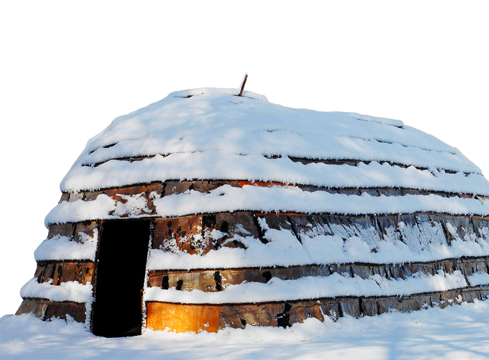

Lawson Site

The Lawson Site is a 500 year old village situated northwest London. The Site is 5 acres in size and was occupied by approximately 2,000 people. ¾ of the Lawson site remains covered by trees and is undisturbed by previous farming or archaeological digs. In 2004 the Lawson Site was officially placed on the Canadian Register of Historic Places; it being the only archaeological site in Ontario and one of only three in Canada to be so designated.